Big idea 1 · energy flows, materials cycle
The rock cycle
The rock cycle creates, breaks, moves and recycles rocks over time. It is how Earth recycles and renews its surface.
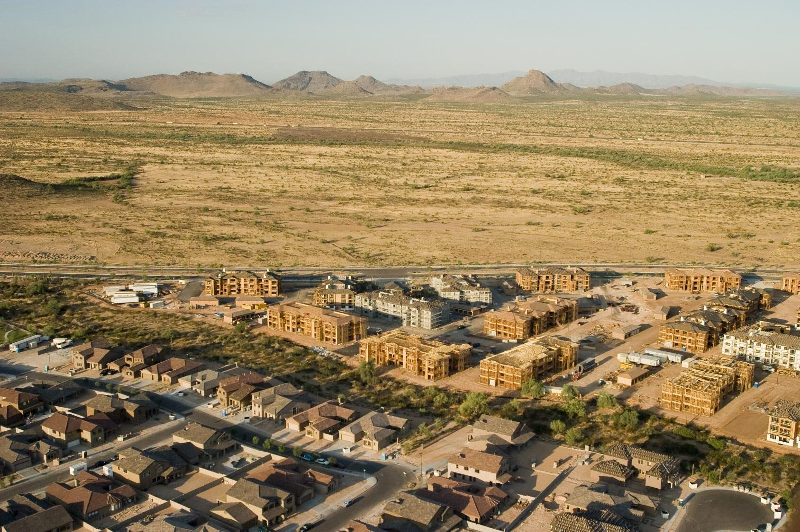
How the ground under our feet supports life, and how we change it.
New neighborhoods on the desert edge of the Valley
Reading for today: S&M Ch. 9
Due dates and submission links are on the course site.
Humans have pervasively altered Earth's surface in the last 250 years, but not all of it is bad: we have also developed many regenerative ways to protect soil.
Explain how tectonic plates, the rock cycle, weathering and erosion build and reshape Earth's surface and soil.
Describe how soil loss, mining and land use change alter the structure and functions of ecosystems.
Evaluate practices that restore and regenerate soil and keep natural cycles going.
Your instructor shows a code on screen at the start of class. Checking in counts toward your participation grade.
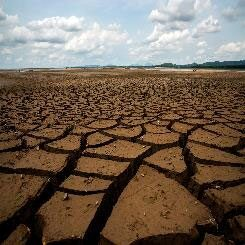
Agriculture, monoculture in particular, strips and exhausts the soil surface.
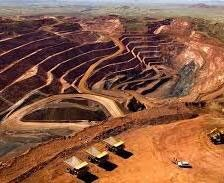
Digging up metals and minerals exposes soil and contaminates the surface.
Converting land changes ecosystems and Earth's biogeochemical cycles.
Pick one sector and one topic. The button opens Timelapse at that topic's place; search for your own place if you like.
earthengine.google.com/timelapse
Play your timelapse from the first year to the last. Then answer each question in one or two sentences.
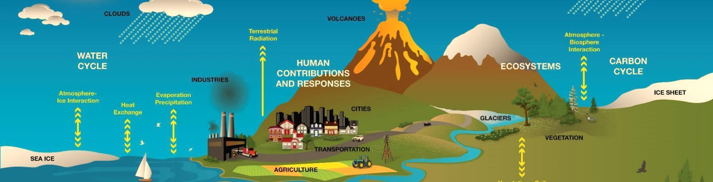
Source: NASA SVS
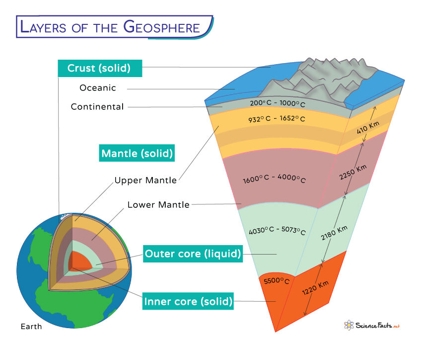
The geosphere is the solid Earth: crust, mantle and core. The lithosphere is its rigid outer shell (the crust plus the top of the mantle), broken into tectonic plates that ride on hotter, softer rock below.
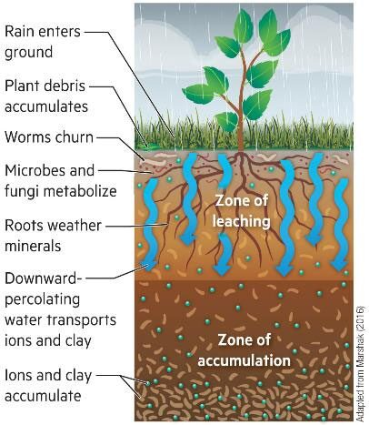
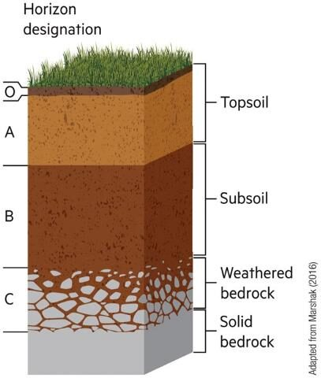
Soil forms when weathered rock mixes with organic matter, water, air and living things.
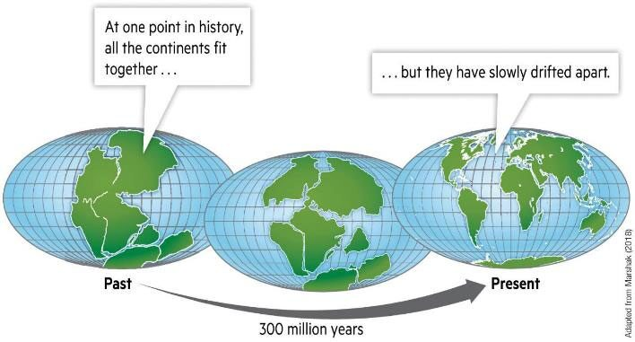
Movement of tectonic plates in Earth's lithosphere produces earthquakes, volcanoes, mountains and lowlands.
Landscapes are made of landforms (surface features like mesas, canyons and valleys) and topography (the shape of the land).
Humans have been changing Earth's landscape to meet our needs, sometimes with unexpected negative consequences.
Three kinds of plate boundary · tap a card to see the landforms it makes
The rock cycle creates, breaks, moves and recycles rocks over time. It is how Earth recycles and renews its surface.
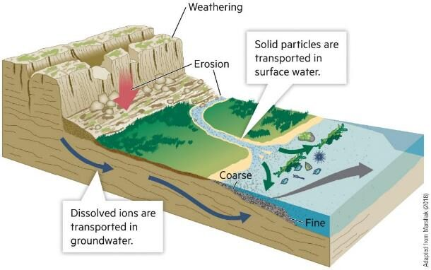
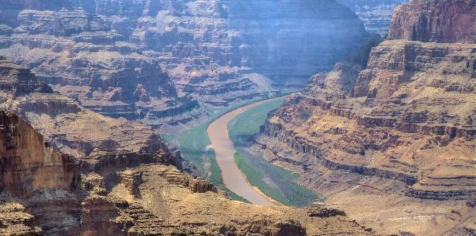
Rock splits without changing: freeze and thaw, roots, desert heating and cooling.
Minerals change: rainwater dissolves limestone, iron rusts red.
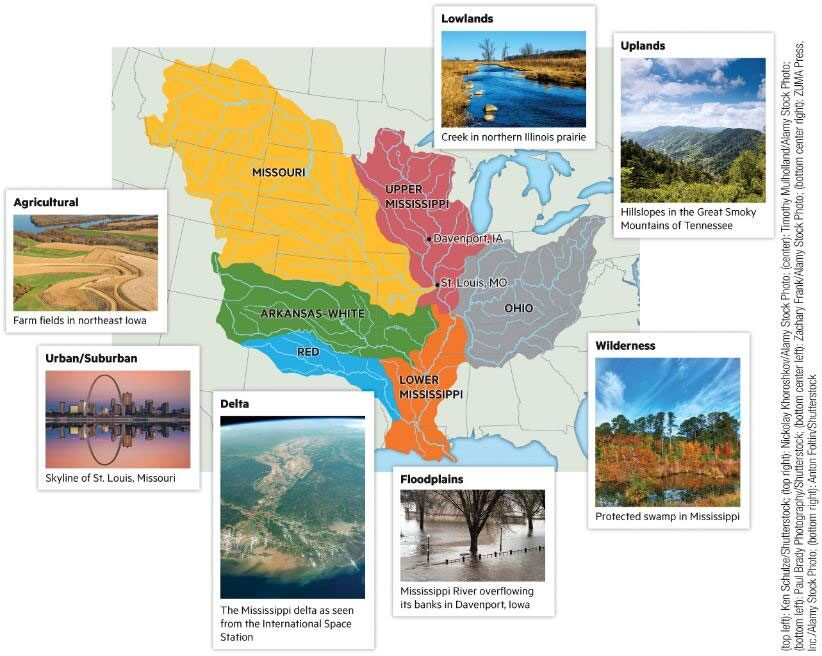
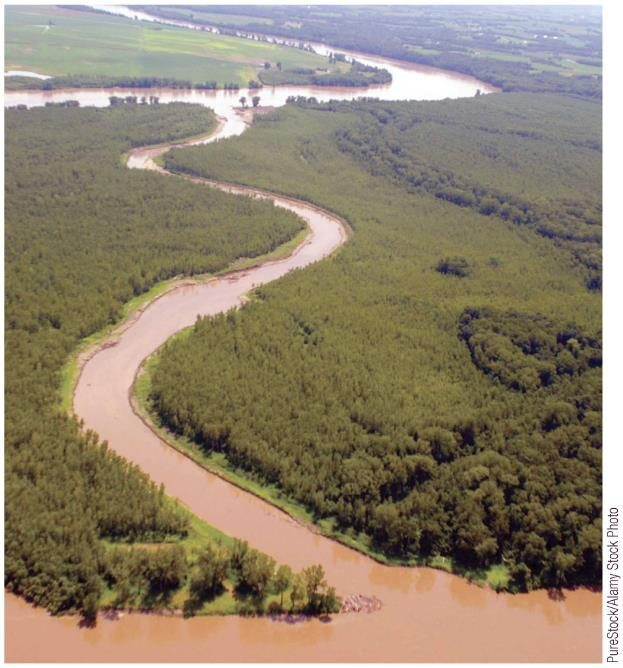
A watershed collects rain and sends it, with its sediment, down one river system.
Human activity can affect sediment movement:
Think, tell a neighbor, then tap to check.
All the land that drains its rain and snowmelt into one river, lake or sea. The Mississippi's watershed reaches from the Rockies to the Appalachians and covers about 40% of the lower 48 states.
Think, tell a neighbor, then tap to check.
The landform a river builds where it slows down at its mouth and drops its sediment, splitting into many channels. The Mississippi's bird's-foot delta in Louisiana is built from mud carried all the way from that watershed.
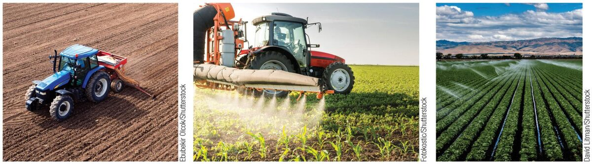
Earth processes like plate tectonics and erosion are inevitable. Humans can adapt to them or mitigate their impacts.
Soil degradation and erosion can be a side effect of farming: bare, tilled fields; one crop year after year; overgrazing.
Degraded landscapes can be rehabilitated or restored after human use.
Mining is not considered sustainable, but abandoned mine sites can be reclaimed and rehabilitated to improve their ecological value.
Rebuild a layer plants can root in.
Roots hold the soil; shade and leaves rebuild it.
Sustainable livestock grazing keeps grass cover.
Mines in Mongolia, the European Union and China have been successfully rehabilitated.
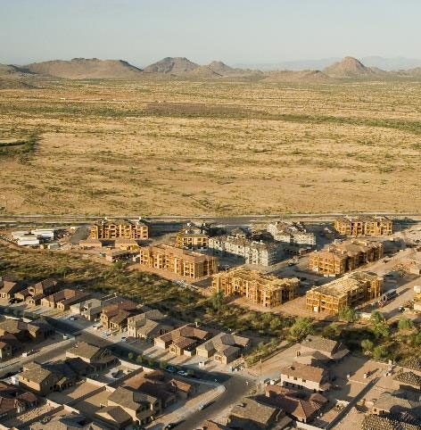
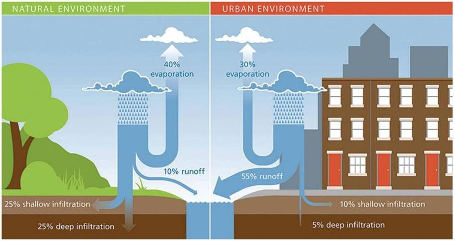
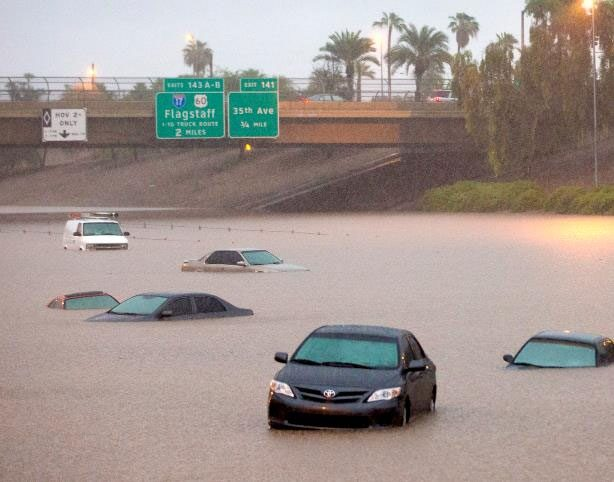
Photo: The Republic
Shares follow the EPA's classic comparison of natural and urban land (FISRWG 1998), rounded; values in between are interpolated as teaching numbers.
Solutions: permeable pavement, retention basins, green roofs and street trees let water soak back in.
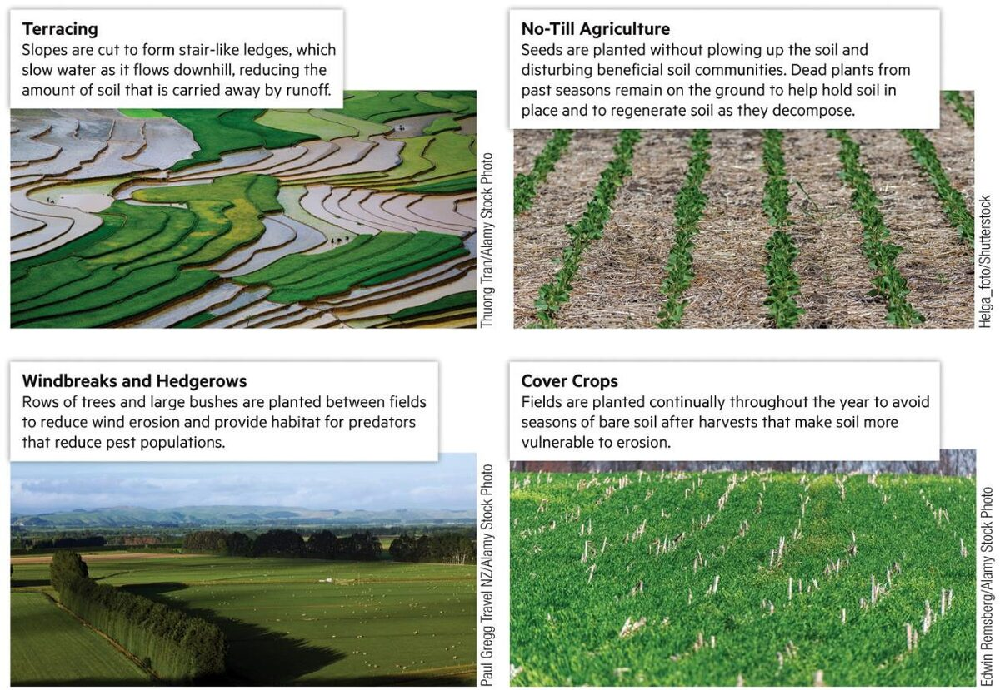
You manage the farm. You have 3 seasons of effort to spend. Each card shows how much it takes.
The ground is a living, moving system. How we farm, mine and build decides whether it keeps supporting life.
Questions? Ask in class or come to office hours.